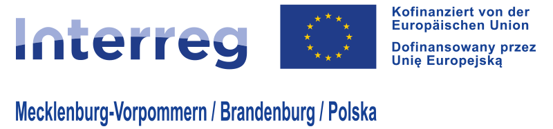

Projekt „Nachbarsprache |wird| reanimiert.
Erwerb sprachlicher und interkultureller Kompetenzen durch AI-gestützte
Reanimationstrainings im deutsch-polnischen Grenzraum“
An der Schnittstelle von Kommunikation und Leben - Bildung, die Leben rettet
Projektpartner
• Klinik für Anästhesie, Intensiv-, Notfall- und Schmerzmedizin der Universitätsmedizin Greifswald
• Institut für Mathematik und Informatik der Universität Greifswald
• Universitätsklinik Nr. 1 der Pommerschen Medizinischen Universität in Stettin
Gefördert durch das EU-Programm Interreg VI A
Ein zukunftsweisender Bildungsansatz
Das Projekt "Nachbarsprache |wird| reanimiert" (NaReT) revolutioniert das Lernen
in der deutsch-polnischen Grenzregion: Es verknüpft den Erwerb kommunikativer
und interkultureller Kompetenzen mit praxisnahen Reanimationstrainings -
unterstützt durch künstliche Intelligenz (KI), Tandemlernen und Extended
Reality (XR). Die Initiative schafft eine neuartige, immersive Lernumgebung, in
der Kommunikation, Kultur und lebensrettendes Wissen ineinandergreifen.
Herzstücke des Projekts sind realistische, digital simulierte Notfallszenarien,
in denen Lernende in der Nachbarsprache agieren müssen. Dank XR-Brillen erleben
sie interaktive Situationen mit lebensechten virtuellen Opfern, Augenzeugen und
Angehörigen. Diese kommunizieren auf Deutsch oder Polnisch und fordern rasches,
korrektes Handeln. Die KI erkennt und analysiert Sprache in Echtzeit und passt
die Szenarien dem individuellen Lernfortschritt an.
Grenzüberschreitende Kommunikation in Notfallsituationen
In Notfällen zählen Sekunden - und Worte. Besonders in grenznahen Regionen ist
nicht nur medizinisches Wissen entscheidend, sondern auch die Fähigkeit zur
klaren Kommunikation in der Sprache der Nachbarn. Trotzdem sinkt das Interesse
am Erwerb von Deutsch bzw. Polnisch stetig.
Gleichzeitig zeigen Studien alarmierende Zahlen:
• In Deutschland leisten nur rund 50 % der Menschen bei Herzstillstand Erste Hilfe
• In Polen liegt die Quote bei etwa 60 %
• In Norwegen hingegen helfen 80 % der Bevölkerung - ein europäisches Vorbild
(Quellen: German Resuscitation Council (GRC), Polish Resuscitation Council
(PRC), Norwegian Resuscitation Council (NRC))
Das Projekt NaReT reagiert auf diesen Bedarf, indem es sprachliche Barrieren
abbaut, die Handlungskompetenz stärkt und lebensrettendes Wissen vermittelt -
situativ, interaktiv und kontextbezogen.
Bildung, die verbindet und wirkt
Die Kombination aus KI, Tandemtraining und XR-Technologie ist europaweit
einzigartig. Lernende erleben Sprachen nicht als theoretisches Konstrukt,
sondern als lebensnahe Notwendigkeit. In simulierten Situationen kommunizieren
sie intuitiv, prüfen Bedeutungen im Kontext und lernen durch aktives Handeln.
Besonders gefragt ist diese Form des adaptiven Lernens bei jungen Menschen, doch
auch Erwachsene, Senioren, Freiwillige und medizinisches Fachpersonal
profitieren davon.
Im Rahmen einer grenzüberschreitenden Umfrage gaben 97,4 % der Befragten an,
dass sie praxisorientierten Sprachunterricht bevorzugen. Als besonders
motivierend wurde der Kontext "Lebensrettung" genannt. NaReT trifft also den
Nerv der Zeit: Bildung wird hier als soziales Bindeglied und als Mittel zur
Sicherheit verstanden.
Nachhaltigkeit und Weitergabe des Wissens
Die Projektinhalte werden über eine zweisprachige, digitale Lernplattform
nachhaltig gesichert. Diese bietet auch nach Projektende Zugang zu den
entwickelten XR-Anwendung, Reanimationsszenarien und Sprachmodulen. Darüber
hinaus werden sogenannte "Mehrwertmultiplikatoren" ausgebildet -
Schlüsselpersonen aus verschiedenen Zielgruppen, die das Wissen weitertragen und
in ihren Gemeinschaften verankern.
Ziel ist es, die entwickelten Formate dauerhaft in Bildungsinstitutionen der
Region zu integrieren - von Schulen bis zu Hilfsdiensten. Eine fortlaufende
wissenschaftliche Begleitung sichert Qualität, Wirksamkeit und
Weiterentwicklung.
Gemeinsam für mehr Sicherheit und Zusammenhalt
NaReT zeigt, wie europäische Zusammenarbeit funktionieren kann: Über Grenzen
hinweg, mit vereinten Kompetenzen und dem gemeinsamen Ziel, Leben zu retten und
Menschen einander näherzubringen. Der Erwerb von Sprache und interkulturellem
Wissen wird hier nicht nur gefördert, sondern praktisch erprobt - mit sichtbarem
Nutzen für das Zusammenleben in der deutsch-polnischen Region.
Liste der assoziierten Projektpartner in alphabetischer Reihenfolge:
Charité - Universitätsmedizin Berlin, Deutscher Rat für Wiederbelebung - German
Resuscitation Council (GRC) e.V., Gemeinde Gryfino, Grundschule in Przecław,
Kreiskrankenhaus Wolgast gGmbH, Land|Rettung M-V e.V., Langzeitpflegeeinrichtung
Fregata, Polnischer Rat für Wiederbelebung - Polish Resuscitation Council (PRC),
Pommersche Medizinische Universität PUM, Stadtkrankenhaus in Swinemünde,
Universität des Dritten Lebensalters in Grzfino, Universitätsrechenzentrum der
Universität Greifswald, Universität Stettin, Uckermärkische
Rettungsdienstgesellschaft mbH, Westpommerische Schule für Wirtschaft - Akademie
für Angewandte Wissenschaften, Woiwodschaftliche Rettungsstation in Stettin,
Landesfeuerwehrverband Brandenburg e.V., Regionalvorstand des Verbandes der
Freiwilligen Feuerwehren der Republik Polen.

home